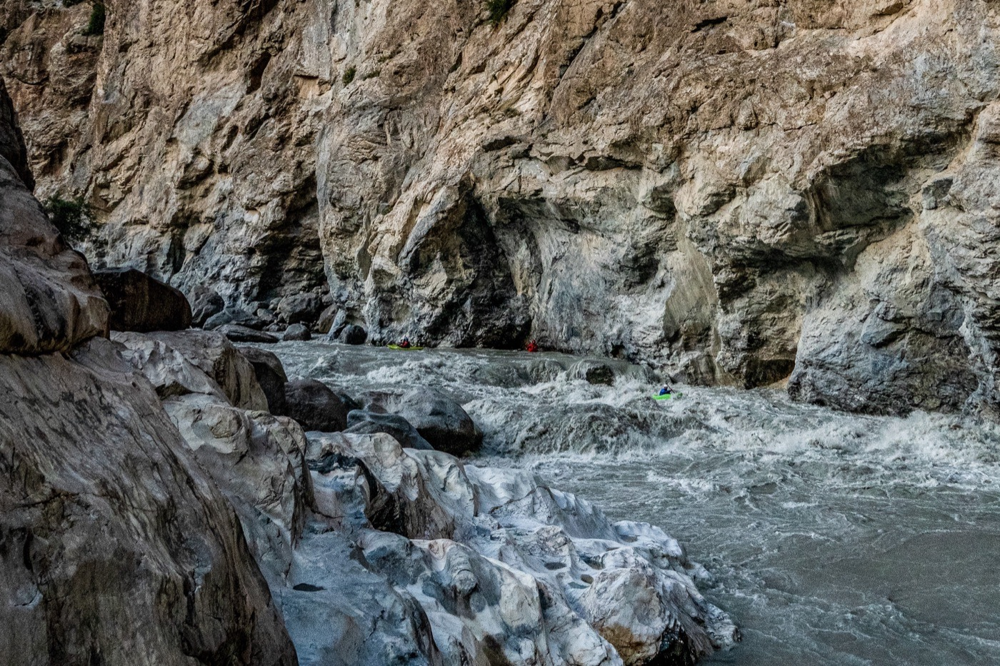

- Location
- Tian Shan, Kyrgyzstan
- River
- Sary-Jaz, grade 5
- Date
- September 2023
- Type
- Self-supported expedition
- Duration
- 12 days
Twelve days, no way out
The Sary-Jaz cuts through the most remote corner of the Tian Shan, on Kyrgyzstan's border with China: about 100km of grade 5 whitewater through a chain of canyons. The river keeps flowing into China, but you can't legally follow it, leaving you deep in the mountains with no road at the end.
When the team finished paddling, the only way out was an 80km hike to the nearest road, climbing to 4,000m through wild, brutal mountain terrain. The goal was to leave nothing behind, no boats and no trash, and they became only the second crew ever to complete the hike out with their kayaks.
Andy led a five-strong team of British paddlers, all good friends from different parts of his life who had never met or paddled together. Before setting off, they trained on a less committing river to acclimatise and learn to work as a team.
Andy gathered every piece of information, permit and emergency plan he could find, then briefed the team on exactly what they were taking on: 12 days through multiple canyons, with no easy way out.